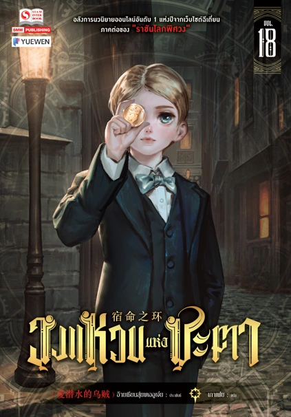

Will Auceptin is the President of the Life School of Thought. "He" is a Beyonder from the Wheel of Fortune Pathway. "He" had to restart as Will Ceres, the son of Aaron Ceres, due to the prediction of Ouroboros' attack in the near future.
This page includes major-spoiler information from the linked source article. The fact fields below are transcribed from that article’s character infobox.Translations
| Language | Official Translation |
|---|---|
| English | Will Auceptin |
| Chinese | 威尔.昂赛汀 |
| Thai | วิล ออเซ็ปติน |
Role & affiliations
Aliases and titles
- Snake of Mercury
Affiliations
- Church of the Fool
- Life School of Thought
Occupation(s)
- Angel of Mercury under The Fool
- President of Life School of Thought
Religion(s)
- Church of the Fool
Pathway & abilities
Pathway: Wheel of Fortune
Recorded progression: Sequence 1: Snake of Mercury (Wheel of Fortune Pathway)

Compare sequence names and pathway symbols in the Pathways reference.
Quotes14 lines
Complete quote entries transcribed from the character’s dedicated wiki Quotes page. The collection includes available Book One and Book Two entries.
Doctor, your luck will get worse.
— Will Auceptin to Aaron Ceres, Lord of Mysteries, Chapter 326.
Haha, I’ll reveal my cards. I have long discovered that you can resist my prophetic senses. Perhaps you can use it to seal it.
— Will Auceptin to Klein Moretti, Lord of Mysteries, Chapter 606.
Why don’t you come in for a cup of tea?
— Will Auceptin, scaring Leonard Mitchell, Lord of Mysteries, Chapter 757.
Do you think that’s realistic? Not only are you getting a newborn to write a letter to you, he still needs to hold a ritual and summon a messenger? [...] The laws of nature still need to be respected!
— Will Auceptin to Klein Moretti, Lord of Mysteries, Chapter 887.
What’s the point in having such gifts? You might as well give me Gwadar. At the very least, that can be drunk!
— Will Auceptin to Klein Moretti, Lord of Mysteries, Chapter 979.
Life is just so hard…
— Will Auceptin, Lord of Mysteries, Chapter 1006.
Backlund really isn’t suitable for children to live in!
— Will Auceptin, Lord of Mysteries, Chapter 1087.
I’m really unlucky… It must’ve been that silly snake, Ouroboros, who took too much of my luck…
— Will Auceptin to Klein Moretti, Lord of Mysteries, Chapter 1124.
Yes, I have a Blessed who is an outstanding gourmet. He has a desire to taste ice cream from the various noble families, so as to determine the most delicious one.
— Will Auceptin to Audrey Hall, Lord of Mysteries, Chapter 1178.
Giving me fake ice cream isn’t equivalent to fooling fate.
— Will Auceptin to Klein Moretti, Lord of Mysteries, Chapter 1357.
I have a feeling that the next opportunity will be better. [...] No, it’s a blessing.
— Will Auceptin to Klein Moretti, Lord of Mysteries, Chapter 1388.
Could you buy me some ice-cream? The weather in Trier is unbearably hot!
— Will Auceptin to Jenna, Circle of Inevitability, Chapter 402.
This is both your luck and misfortune. It signifies that you will encounter many things and bear significant responsibility. You may not fully grasp it now, but one day, you will.
— Will Auceptin giving his coin to Jenna, Circle of Inevitability, Chapter 459.
What’s destined to come will come…
— Will Auceptin looking at a Crimson Moon, Circle of Inevitability, Chapter 1150.
Image gallery

